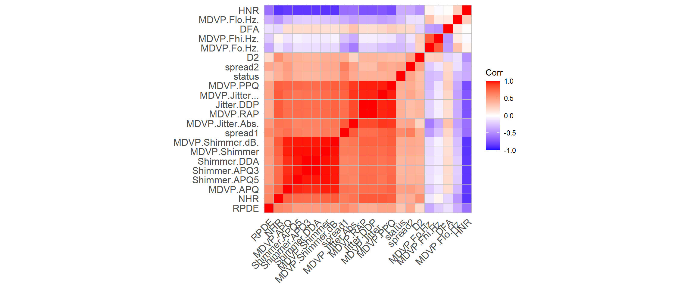
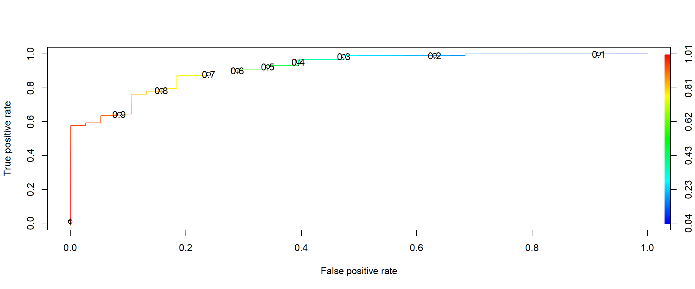

Parkinson’s disease (PD) is a neurodegenerative disorder that affects predominately dopamine-producing neurons in a specific area of the brain called substantia nigra.
Symptoms generally develop slowly over years. The progression of symptoms is often a bit different from one person to another due to the diversity of the disease. People with PD may experience:
Tremor, mainly at rest and described as pill rolling tremor in hands. Other forms of tremor are possible Slowness of movements (bradykinesia) Limb rigidity Gait and balance problems Let’s come to the dataset. This dataset is from UCI Machine Learning Repository.This dataset is composed of a range of biomedical voice measurements from 31 people, 23 with Parkinson’s disease (PD). Each column in the table is a particular voice measure, and each row corresponds one of 195 voice recording from these individuals (“name” column). The main aim of the data is to discriminate healthy people from those with PD, according to “status” column which is set to 0 for healthy and 1 for PD.
Our problem is to predict any individual as healthy or not. Parkinson’s disease (PD) is a neurodegenerative disorder that affects predominately dopamine-producing neurons in a specific area of the brain called substantia nigra.
Symptoms generally develop slowly over years. The progression of symptoms is often a bit different from one person to another due to the diversity of the disease. People with PD may experience:
Tremor, mainly at rest and described as pill rolling tremor in hands. Other forms of tremor are possible Slowness of movements (bradykinesia) Limb rigidity Gait and balance problems Let’s come to the dataset. This dataset is from UCI Machine Learning Repository.This dataset is composed of a range of biomedical voice measurements from 31 people, 23 with Parkinson’s disease (PD). Each column in the table is a particular voice measure, and each row corresponds one of 195 voice recording from these individuals (“name” column). The main aim of the data is to discriminate healthy people from those with PD, according to “status” column which is set to 0 for healthy and 1 for PD. We will be using Logistic Regression.
Our problem is to predict any individual as healthy or not.
data <- read.csv(file = 'parkinsons.data')We have our data set called “data”. Let’s get a view and summary of the dataset.
head(data,6)## name MDVP.Fo.Hz. MDVP.Fhi.Hz. MDVP.Flo.Hz. MDVP.Jitter...
## 1 phon_R01_S01_1 119.992 157.302 74.997 0.00784
## 2 phon_R01_S01_2 122.400 148.650 113.819 0.00968
## 3 phon_R01_S01_3 116.682 131.111 111.555 0.01050
## 4 phon_R01_S01_4 116.676 137.871 111.366 0.00997
## 5 phon_R01_S01_5 116.014 141.781 110.655 0.01284
## 6 phon_R01_S01_6 120.552 131.162 113.787 0.00968
## MDVP.Jitter.Abs. MDVP.RAP MDVP.PPQ Jitter.DDP MDVP.Shimmer MDVP.Shimmer.dB.
## 1 0.00007 0.00370 0.00554 0.01109 0.04374 0.426
## 2 0.00008 0.00465 0.00696 0.01394 0.06134 0.626
## 3 0.00009 0.00544 0.00781 0.01633 0.05233 0.482
## 4 0.00009 0.00502 0.00698 0.01505 0.05492 0.517
## 5 0.00011 0.00655 0.00908 0.01966 0.06425 0.584
## 6 0.00008 0.00463 0.00750 0.01388 0.04701 0.456
## Shimmer.APQ3 Shimmer.APQ5 MDVP.APQ Shimmer.DDA NHR HNR status RPDE
## 1 0.02182 0.03130 0.02971 0.06545 0.02211 21.033 1 0.414783
## 2 0.03134 0.04518 0.04368 0.09403 0.01929 19.085 1 0.458359
## 3 0.02757 0.03858 0.03590 0.08270 0.01309 20.651 1 0.429895
## 4 0.02924 0.04005 0.03772 0.08771 0.01353 20.644 1 0.434969
## 5 0.03490 0.04825 0.04465 0.10470 0.01767 19.649 1 0.417356
## 6 0.02328 0.03526 0.03243 0.06985 0.01222 21.378 1 0.415564
## DFA spread1 spread2 D2 PPE
## 1 0.815285 -4.813031 0.266482 2.301442 0.284654
## 2 0.819521 -4.075192 0.335590 2.486855 0.368674
## 3 0.825288 -4.443179 0.311173 2.342259 0.332634
## 4 0.819235 -4.117501 0.334147 2.405554 0.368975
## 5 0.823484 -3.747787 0.234513 2.332180 0.410335
## 6 0.825069 -4.242867 0.299111 2.187560 0.357775dim(data)## [1] 195 24na = colSums(is.na(data))no missing values.
So “status” is our variable of interest. We would like to predict the class of the ‘status’ of any individuals. It’s a classification problem. We are going to use various classification algorithm for this problem. # Feature scaling
data[,- c(1,18)] <- scale(data[,-c(1,18)])#define the columns that contain your abundance data. Change the number after the “:” to subset your data
com = data[,2:23]Now create a correlation matrix with your community composition data using the command ‘cor’
cc = cor(com, method = "spearman")Now you have a correlation matrix that contains correlation coefficients for every pairwise combination of variables in our data and Spearman captures all types of positive or negative relationships Spearman correlation: is a non-parametric measure of rank correlation and assesses how well a relationship between two variables can be described using a monotonic function. The easiest way to visualize this correlation matrix is using the function “ggcorrplot” from the package ggcorrplot
library(ggcorrplot)## Warning: package 'ggcorrplot' was built under R version 4.0.2## Loading required package: ggplot2ggcorrplot(cc,hc.order="TRUE") It is clear that correlated features means that they bring the same information, so it is logical to remove one of them. When we have highly correlated features, the variance will be large.
Removing the highly correlated variables
data <- subset(data, select = -c(1,5,6,8,10,11,12,14))Now we have removed the highly correlated variables from the dataset.
now we age going to split our data into training and test data
library(caTools)## Warning: package 'caTools' was built under R version 4.0.2split=sample.split(data$status,SplitRatio = .80)
train=subset(data,split==T)
test=subset(data,split==F)Model fitting
library(caret)## Warning: package 'caret' was built under R version 4.0.2## Loading required package: latticemodel.lg= glm(data=train,status~.,family = "binomial")
summary(model.lg)##
## Call:
## glm(formula = status ~ ., family = "binomial", data = train)
##
## Deviance Residuals:
## Min 1Q Median 3Q Max
## -2.47527 0.00003 0.09778 0.41785 1.74391
##
## Coefficients:
## Estimate Std. Error z value Pr(>|z|)
## (Intercept) 3.4992 0.8430 4.151 3.31e-05 ***
## MDVP.Fo.Hz. -0.6445 0.5578 -1.155 0.2480
## MDVP.Fhi.Hz. -0.3872 0.3746 -1.034 0.3014
## MDVP.Flo.Hz. 0.2245 0.4086 0.549 0.5827
## MDVP.RAP 118.9637 335.7370 0.354 0.7231
## Jitter.DDP -117.6169 335.8785 -0.350 0.7262
## Shimmer.APQ5 4.4341 2.5942 1.709 0.0874 .
## Shimmer.DDA -1.6652 1.7270 -0.964 0.3349
## NHR -1.0925 1.3804 -0.791 0.4287
## HNR 1.1119 0.8563 1.298 0.1941
## RPDE -0.3757 0.4971 -0.756 0.4498
## DFA -0.3207 0.5053 -0.635 0.5257
## spread1 0.4456 1.6167 0.276 0.7828
## spread2 0.7779 0.4560 1.706 0.0880 .
## D2 0.7285 0.5067 1.438 0.1505
## PPE 1.7154 1.8767 0.914 0.3607
## ---
## Signif. codes: 0 '***' 0.001 '**' 0.01 '*' 0.05 '.' 0.1 ' ' 1
##
## (Dispersion parameter for binomial family taken to be 1)
##
## Null deviance: 173.217 on 155 degrees of freedom
## Residual deviance: 85.891 on 140 degrees of freedom
## AIC: 117.89
##
## Number of Fisher Scoring iterations: 8step(model.lg,direction="backward")## Start: AIC=117.89
## status ~ MDVP.Fo.Hz. + MDVP.Fhi.Hz. + MDVP.Flo.Hz. + MDVP.RAP +
## Jitter.DDP + Shimmer.APQ5 + Shimmer.DDA + NHR + HNR + RPDE +
## DFA + spread1 + spread2 + D2 + PPE
##
## Df Deviance AIC
## - spread1 1 85.971 115.97
## - Jitter.DDP 1 86.015 116.02
## - MDVP.RAP 1 86.018 116.02
## - MDVP.Flo.Hz. 1 86.195 116.19
## - DFA 1 86.299 116.30
## - RPDE 1 86.465 116.47
## - NHR 1 86.568 116.57
## - PPE 1 86.667 116.67
## - Shimmer.DDA 1 86.787 116.79
## - MDVP.Fhi.Hz. 1 86.920 116.92
## - MDVP.Fo.Hz. 1 87.255 117.25
## - HNR 1 87.604 117.60
## <none> 85.891 117.89
## - D2 1 88.050 118.05
## - spread2 1 88.972 118.97
## - Shimmer.APQ5 1 89.059 119.06
##
## Step: AIC=115.97
## status ~ MDVP.Fo.Hz. + MDVP.Fhi.Hz. + MDVP.Flo.Hz. + MDVP.RAP +
## Jitter.DDP + Shimmer.APQ5 + Shimmer.DDA + NHR + HNR + RPDE +
## DFA + spread2 + D2 + PPE
##
## Df Deviance AIC
## - Jitter.DDP 1 86.083 114.08
## - MDVP.RAP 1 86.086 114.09
## - MDVP.Flo.Hz. 1 86.300 114.30
## - DFA 1 86.428 114.43
## - RPDE 1 86.514 114.51
## - NHR 1 86.625 114.62
## - Shimmer.DDA 1 86.840 114.84
## - MDVP.Fhi.Hz. 1 86.997 115.00
## - MDVP.Fo.Hz. 1 87.425 115.42
## - HNR 1 87.731 115.73
## <none> 85.971 115.97
## - D2 1 88.275 116.28
## - Shimmer.APQ5 1 89.113 117.11
## - spread2 1 89.419 117.42
## - PPE 1 92.956 120.96
##
## Step: AIC=114.08
## status ~ MDVP.Fo.Hz. + MDVP.Fhi.Hz. + MDVP.Flo.Hz. + MDVP.RAP +
## Shimmer.APQ5 + Shimmer.DDA + NHR + HNR + RPDE + DFA + spread2 +
## D2 + PPE
##
## Df Deviance AIC
## - MDVP.Flo.Hz. 1 86.407 112.41
## - DFA 1 86.522 112.52
## - RPDE 1 86.540 112.54
## - NHR 1 86.753 112.75
## - Shimmer.DDA 1 86.944 112.94
## - MDVP.RAP 1 87.008 113.01
## - MDVP.Fhi.Hz. 1 87.094 113.09
## - MDVP.Fo.Hz. 1 87.495 113.50
## <none> 86.083 114.08
## - HNR 1 88.181 114.18
## - D2 1 88.587 114.59
## - Shimmer.APQ5 1 89.338 115.34
## - spread2 1 89.660 115.66
## - PPE 1 92.956 118.96
##
## Step: AIC=112.41
## status ~ MDVP.Fo.Hz. + MDVP.Fhi.Hz. + MDVP.RAP + Shimmer.APQ5 +
## Shimmer.DDA + NHR + HNR + RPDE + DFA + spread2 + D2 + PPE
##
## Df Deviance AIC
## - DFA 1 86.700 110.70
## - RPDE 1 86.936 110.94
## - NHR 1 87.138 111.14
## - MDVP.RAP 1 87.180 111.18
## - Shimmer.DDA 1 87.201 111.20
## - MDVP.Fhi.Hz. 1 87.461 111.46
## - MDVP.Fo.Hz. 1 87.498 111.50
## <none> 86.407 112.41
## - HNR 1 88.451 112.45
## - D2 1 88.812 112.81
## - Shimmer.APQ5 1 89.467 113.47
## - spread2 1 89.900 113.90
## - PPE 1 93.151 117.15
##
## Step: AIC=110.7
## status ~ MDVP.Fo.Hz. + MDVP.Fhi.Hz. + MDVP.RAP + Shimmer.APQ5 +
## Shimmer.DDA + NHR + HNR + RPDE + spread2 + D2 + PPE
##
## Df Deviance AIC
## - RPDE 1 87.069 109.07
## - NHR 1 87.165 109.17
## - MDVP.RAP 1 87.222 109.22
## - Shimmer.DDA 1 87.399 109.40
## - MDVP.Fo.Hz. 1 87.509 109.51
## - MDVP.Fhi.Hz. 1 87.570 109.57
## <none> 86.700 110.70
## - HNR 1 88.738 110.74
## - D2 1 89.501 111.50
## - Shimmer.APQ5 1 89.531 111.53
## - spread2 1 89.919 111.92
## - PPE 1 93.970 115.97
##
## Step: AIC=109.07
## status ~ MDVP.Fo.Hz. + MDVP.Fhi.Hz. + MDVP.RAP + Shimmer.APQ5 +
## Shimmer.DDA + NHR + HNR + spread2 + D2 + PPE
##
## Df Deviance AIC
## - NHR 1 87.580 107.58
## - MDVP.Fo.Hz. 1 87.701 107.70
## - MDVP.RAP 1 87.796 107.80
## - Shimmer.DDA 1 87.864 107.86
## - MDVP.Fhi.Hz. 1 88.157 108.16
## <none> 87.069 109.07
## - spread2 1 89.940 109.94
## - Shimmer.APQ5 1 90.141 110.14
## - HNR 1 90.923 110.92
## - D2 1 91.738 111.74
## - PPE 1 94.059 114.06
##
## Step: AIC=107.58
## status ~ MDVP.Fo.Hz. + MDVP.Fhi.Hz. + MDVP.RAP + Shimmer.APQ5 +
## Shimmer.DDA + HNR + spread2 + D2 + PPE
##
## Df Deviance AIC
## - MDVP.RAP 1 87.850 105.85
## - MDVP.Fo.Hz. 1 88.031 106.03
## - Shimmer.DDA 1 88.251 106.25
## - MDVP.Fhi.Hz. 1 88.808 106.81
## <none> 87.580 107.58
## - spread2 1 90.168 108.17
## - Shimmer.APQ5 1 90.557 108.56
## - D2 1 92.034 110.03
## - HNR 1 92.948 110.95
## - PPE 1 96.935 114.94
##
## Step: AIC=105.85
## status ~ MDVP.Fo.Hz. + MDVP.Fhi.Hz. + Shimmer.APQ5 + Shimmer.DDA +
## HNR + spread2 + D2 + PPE
##
## Df Deviance AIC
## - Shimmer.DDA 1 88.350 104.35
## - MDVP.Fo.Hz. 1 88.382 104.38
## - MDVP.Fhi.Hz. 1 88.924 104.92
## <none> 87.850 105.85
## - spread2 1 90.189 106.19
## - Shimmer.APQ5 1 90.575 106.58
## - D2 1 92.691 108.69
## - HNR 1 93.234 109.23
## - PPE 1 97.811 113.81
##
## Step: AIC=104.35
## status ~ MDVP.Fo.Hz. + MDVP.Fhi.Hz. + Shimmer.APQ5 + HNR + spread2 +
## D2 + PPE
##
## Df Deviance AIC
## - MDVP.Fo.Hz. 1 88.784 102.78
## - MDVP.Fhi.Hz. 1 89.226 103.23
## <none> 88.350 104.35
## - spread2 1 90.377 104.38
## - D2 1 93.395 107.39
## - HNR 1 93.895 107.89
## - Shimmer.APQ5 1 95.311 109.31
## - PPE 1 100.532 114.53
##
## Step: AIC=102.78
## status ~ MDVP.Fhi.Hz. + Shimmer.APQ5 + HNR + spread2 + D2 + PPE
##
## Df Deviance AIC
## - MDVP.Fhi.Hz. 1 90.363 102.36
## <none> 88.784 102.78
## - spread2 1 92.120 104.12
## - D2 1 93.421 105.42
## - HNR 1 95.078 107.08
## - Shimmer.APQ5 1 95.896 107.90
## - PPE 1 108.605 120.61
##
## Step: AIC=102.36
## status ~ Shimmer.APQ5 + HNR + spread2 + D2 + PPE
##
## Df Deviance AIC
## <none> 90.363 102.36
## - spread2 1 93.908 103.91
## - D2 1 94.101 104.10
## - Shimmer.APQ5 1 98.030 108.03
## - HNR 1 98.111 108.11
## - PPE 1 113.566 123.57##
## Call: glm(formula = status ~ Shimmer.APQ5 + HNR + spread2 + D2 + PPE,
## family = "binomial", data = train)
##
## Coefficients:
## (Intercept) Shimmer.APQ5 HNR spread2 D2
## 3.4225 2.3407 1.6090 0.6702 0.7145
## PPE
## 2.9525
##
## Degrees of Freedom: 155 Total (i.e. Null); 150 Residual
## Null Deviance: 173.2
## Residual Deviance: 90.36 AIC: 102.4The Akaike information criterion (AIC) is an estimator of out-of-sample prediction error and thereby relative quality of statistical models for a given set of data.Lower AIC values indicate a better-fit model
We will select the model with lowest AIC that is status ~ Shimmer.APQ5 + NHR + RPDE + spread1 + spread2
final.model= glm(formula = status ~ Shimmer.APQ5 + NHR + RPDE + spread1 +
spread2, family = "binomial", data = train)
summary(final.model)##
## Call:
## glm(formula = status ~ Shimmer.APQ5 + NHR + RPDE + spread1 +
## spread2, family = "binomial", data = train)
##
## Deviance Residuals:
## Min 1Q Median 3Q Max
## -2.18194 0.00188 0.15738 0.48134 2.00520
##
## Coefficients:
## Estimate Std. Error z value Pr(>|z|)
## (Intercept) 2.6428 0.4798 5.508 3.63e-08 ***
## Shimmer.APQ5 1.5442 0.7762 1.989 0.046649 *
## NHR -0.9154 0.6217 -1.473 0.140866
## RPDE -0.6730 0.3474 -1.937 0.052702 .
## spread1 2.3488 0.6097 3.852 0.000117 ***
## spread2 0.8907 0.3770 2.362 0.018154 *
## ---
## Signif. codes: 0 '***' 0.001 '**' 0.01 '*' 0.05 '.' 0.1 ' ' 1
##
## (Dispersion parameter for binomial family taken to be 1)
##
## Null deviance: 173.217 on 155 degrees of freedom
## Residual deviance: 94.714 on 150 degrees of freedom
## AIC: 106.71
##
## Number of Fisher Scoring iterations: 7We will check our model’s accuracy now. First we will use our training data.
Fitting the model
train$pred<-fitted(final.model)Predicting the train dataset
library(ROCR)## Warning: package 'ROCR' was built under R version 4.0.2pred <-prediction(train$pred,train$status)Create Performance Objects and plotting graph
perf<-performance(pred,"tpr","fpr")
plot(perf,colorize = T,print.cutoffs.at = seq(0.1,by = 0.1)) With the use of ROC curve we can observe that 0.8 is having better sensitivity and specificity.There we select 0.8 as our cutoff to distinguish.
pre <- as.numeric(predict(final.model,type="response")>0.8)creating the confusion matrix
confusionMatrix(table(pre,train$status))## Confusion Matrix and Statistics
##
##
## pre 0 1
## 0 32 27
## 1 6 91
##
## Accuracy : 0.7885
## 95% CI : (0.7159, 0.8497)
## No Information Rate : 0.7564
## P-Value [Acc > NIR] : 0.2019692
##
## Kappa : 0.5165
##
## Mcnemar's Test P-Value : 0.0004985
##
## Sensitivity : 0.8421
## Specificity : 0.7712
## Pos Pred Value : 0.5424
## Neg Pred Value : 0.9381
## Prevalence : 0.2436
## Detection Rate : 0.2051
## Detection Prevalence : 0.3782
## Balanced Accuracy : 0.8066
##
## 'Positive' Class : 0
## Accuracy of training data From confusion matrix of training data, we come to know that our model is 82.40% accurate.
Now validating the model on testing data
pre <- as.numeric(predict(final.model,newdata=test,type="response")>0.8)# type = “response” is used to get the outcome in the form of probability of having parkinson’s disease. As we know that, for training data the cutoff has been 0.9.Similarly the testing data will also have the same threshold or cutoff.
making the confusion matrix
confusionMatrix(table(pre,test$status))## Confusion Matrix and Statistics
##
##
## pre 0 1
## 0 10 6
## 1 0 23
##
## Accuracy : 0.8462
## 95% CI : (0.6947, 0.9414)
## No Information Rate : 0.7436
## P-Value [Acc > NIR] : 0.09529
##
## Kappa : 0.6628
##
## Mcnemar's Test P-Value : 0.04123
##
## Sensitivity : 1.0000
## Specificity : 0.7931
## Pos Pred Value : 0.6250
## Neg Pred Value : 1.0000
## Prevalence : 0.2564
## Detection Rate : 0.2564
## Detection Prevalence : 0.4103
## Balanced Accuracy : 0.8966
##
## 'Positive' Class : 0
## Balanced Accuracy of Testing data is 79.66%
To check how much of our predicted values lie inside the curve
auc<-performance(pred,"auc")
auc@y.values## [[1]]
## [1] 0.9148082We can conclude that we are getting an accuracy of 79.66 %. Also our misclassifcation rate is 20.34%